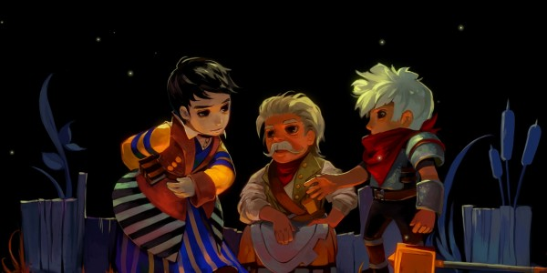
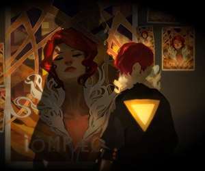

¿Qué es Bastión? La Real Academia Española lo define como baluarte, una fortificación, la base de lo que será o conformará una construcción. Es agradable partir de esta idea, SuperGiant Games nace de un pequeño e independiente estudio conformado por siete personas que anteriormente trabajaron en Infinity Ward y Electronic Arts. Su primer trabajo, un juego indie de nombre Bastión.

Dos mundos, diferentes realidades
Bastión se convierte en ese primer peldaño en la historia de esta compañía. El estilo y corte que emplean hace que podamos identificar fácilmente su trabajo en este medio lleno de tantas maravillas tecnológicas. Los elementos que dan vida a este juego son impresionantes, el que más me atrapó fue su música; si añadimos un diseño de arte impecable, un narrador omnisciente y un sistema de juego por demás amigable, tendremos enfrente un producto que no sólo les asombrará, les hará pedir más y para bien estamos a solamente un año de una nueva aventura.

365 Días
Transistor es el nombre con el que bautizaron este proyecto, una aventura que permite sentir la maduración del estudio y consagrar todo aquello que marcó la diferencia en Bastión. Sólo son 365 días -tal vez menos- para ver este juego en tiendas virtuales. Así, únicamente el tiempo nos separa de poder disfrutar una joya que anticipa momentos maravillosos y sensaciones que pocos juegos logran transmitir.
P.D. Regresa la música de Darren Korb, que es algo que me emociona mucho.
Publicado en http://befiles.wordpress.com/ el 5 de Abril del 2013